符号
| 数据 | ||
|---|---|---|
| 区间的和 | sum | |
| 作为指定区间和的返回值（* 由于用于显示，不必使用数组） | res | |
| 对请求的处理 | ||
|---|---|---|
 |
更新区间的和 | sum[k] ← ? |
 |
确定指定区间的和 | res ← ? |
 |
因更新查询而更新的区间 | k 的轨迹 |
| 搜索区间与查询区间不相交 | if r ≤ a or b ≤ l: | |
 |
搜索区间完全处于查询区间内 | else if a ≤ l and r ≤ b: |
 |
搜索区间包含查询区间内和查询区间外的部分 | else: |
动画
对请求的处理
